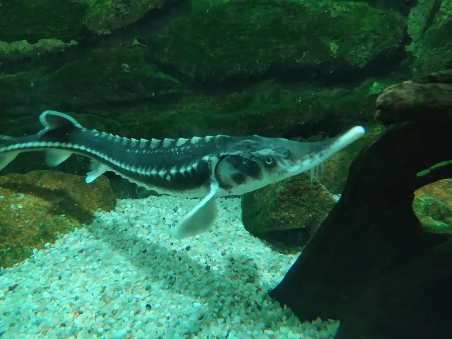

鱼类 · 动物界
闪光鲟 Acipenser stellatus

体侧骨板呈星状排列的鲟鱼，吻部细长如剑，在里海和黑海流域溯河产卵，因鱼子酱贸易而极度濒危。
- 分类
- 门脊索动物门纲辐鳍鱼纲目鲟形目科鲟科属鲟属
- 栖息环境
- 里海、黑海和亚速海，繁殖期进入河流的砾石底河段
- 地理分布
- 里海、黑海、亚速海流域，包括伏尔加河、库班河和顿河
- 保护级别
- IUCN 极危（CR）；《濒危野生动植物种国际贸易公约》附录Ⅱ
物种志
闪光鲟体呈细长的纺锤形，吻部特别延长，呈剑状，口小、下位，前方有 4 根触须。体表覆盖 5 列骨板，体侧的骨板中央常有星状或放射状的棱脊，因此得名“闪光鲟”。体色背部灰褐或橄榄色，腹部白色。成鱼体长一般 1.2–1.8 m，最大可达 2.2 m，体重 20–50 kg。
闪光鲟是溯河洄游鱼类，平时栖息在里海、黑海和亚速海，春季和秋季溯河进入伏尔加河、库班河、顿河等河流产卵。它以底栖的小鱼、甲壳类和软体动物为食。由于鱼卵价值极高，闪光鲟长期被大量捕捞，加上河流筑坝切断了产卵通道，野生种群数量急剧下降，IUCN 将其列为极危。目前欧洲和亚洲都有养殖种群，用于生产鱼子酱和增殖放流。
形态与习性
- 食性底栖的小鱼、甲壳类和软体动物
- 体长一般 1.2–1.8 m，最大可达 2.2 m
- 体重一般 20–50 kg
- 寿命可达 30 年左右
- 繁殖春秋两季溯河产卵，卵产在砾石底
- 外形吻部细长如剑，体侧骨板呈星状棱脊
趣味知识
- 闪光鲟的吻部细长如剑，体侧骨板上的星状棱脊是它得名的原因。
- 它的鱼卵颗粒较大，是制作高档鱼子酱的原料之一。
- 河流上的水坝会阻断闪光鲟的产卵洄游路线，是其数量下降的重要原因。